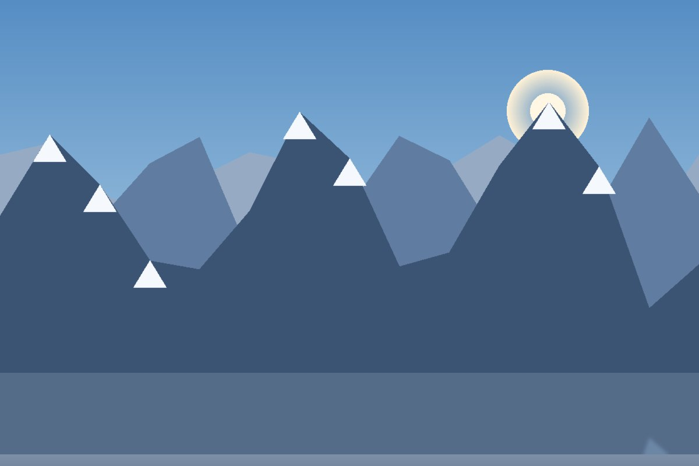
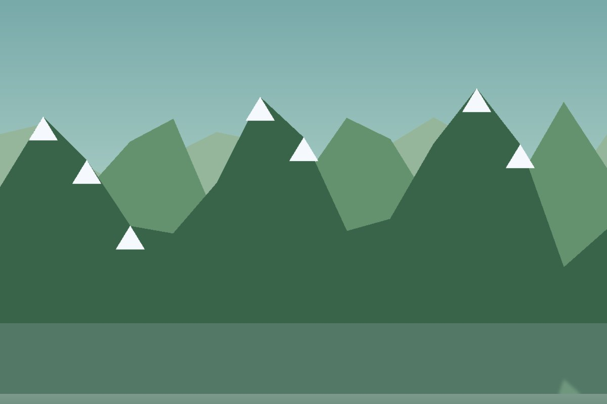

Roháče sú najkrajšia časť Západných Tatier. Nájdeš tu plesá, ostré hrebene aj kamzíkov. Je to kúsok od Oravy - ideálne na jednodňovú túru.

Krajina sa počas výstupu mení z lesa až po holé skaly:
Klasická trasa má čtyri hlavné zastávky:


Viac fotek a aktuálne počasie nájdeš na oficiálnej stránke - klikni na obrázok
s25maros.bielak@strednaskolats.sk